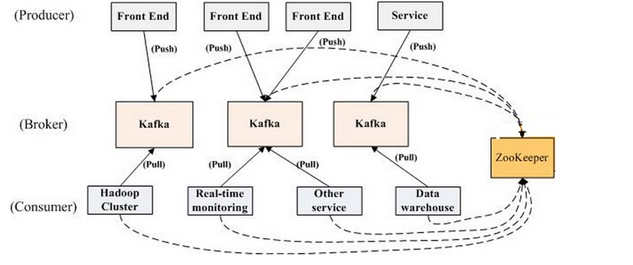
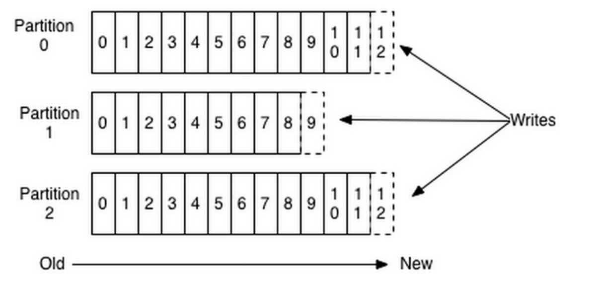
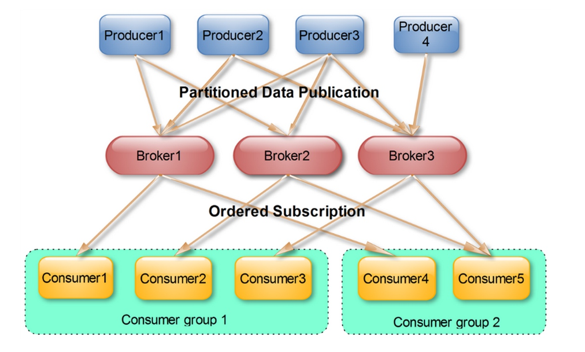
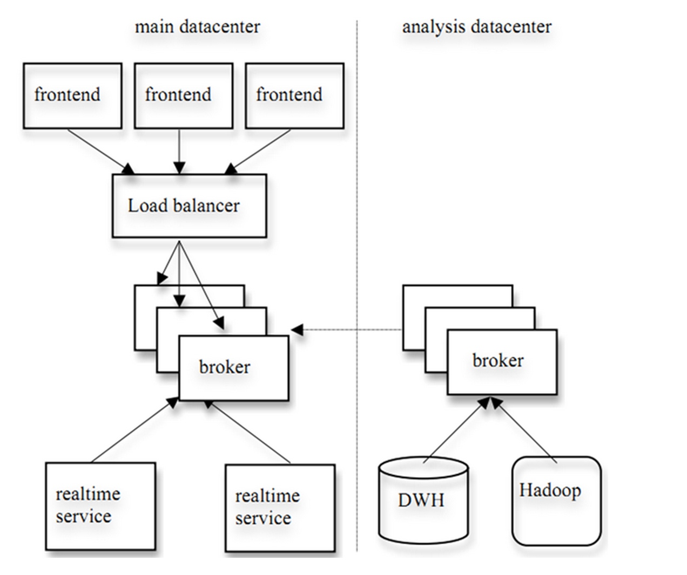

Kafka简介
Kafka是一种分布式的，基于发布/订阅的消息系统。主要设计目标如下：
以时间复杂度为O(1)的方式提供消息持久化能力，即使对TB级以上数据也能保证常数时间复杂度的访问性能。
高吞吐率。即使在非常廉价的商用机器上也能做到单机支持每秒100K条以上消息的传输。
支持Kafka Server间的消息分区，及分布式消费，同时保证每个Partition内的消息顺序传输。
同时支持离线数据处理和实时数据处理。
Scale out：支持在线水平扩展。
为何使用消息系统
解耦
在项目启动之初来预测将来项目会碰到什么需求，是极其困难的。消息系统在处理过程中间插入了一个隐含的、基于数据的接口层，两边的处理过程都要实现这一接口。这允许你独立的扩展或修改两边的处理过程，只要确保它们遵守同样的接口约束。
冗余
有些情况下，处理数据的过程会失败。除非数据被持久化，否则将造成丢失。消息队列把数据进行持久化直到它们已经被完全处理，通过这一方式规避了数据丢失风险。许多消息队列所采用的"插入-获取-删除"范式中，在把一个消息从队列中删除之前，需要你的处理系统明确的指出该消息已经被处理完毕，从而确保你的数据被安全的保存直到你使用完毕。
扩展性
因为消息队列解耦了你的处理过程，所以增大消息入队和处理的频率是很容易的，只要另外增加处理过程即可。不需要改变代码、不需要调节参数。扩展就像调大电力按钮一样简单。
灵活性 & 峰值处理能力
在访问量剧增的情况下，应用仍然需要继续发挥作用，但是这样的突发流量并不常见；如果为以能处理这类峰值访问为标准来投入资源随时待命无疑是巨大的浪费。使用消息队列能够使关键组件顶住突发的访问压力，而不会因为突发的超负荷的请求而完全崩溃。
可恢复性
系统的一部分组件失效时，不会影响到整个系统。消息队列降低了进程间的耦合度，所以即使一个处理消息的进程挂掉，加入队列中的消息仍然可以在系统恢复后被处理。
顺序保证
在大多使用场景下，数据处理的顺序都很重要。大部分消息队列本来就是排序的，并且能保证数据会按照特定的顺序来处理。Kafka保证一个Partition内的消息的有序性。
缓冲
在任何重要的系统中，都会有需要不同的处理时间的元素。例如，加载一张图片比应用过滤器花费更少的时间。消息队列通过一个缓冲层来帮助任务最高效率的执行———写入队列的处理会尽可能的快速。该缓冲有助于控制和优化数据流经过系统的速度。
异步通信
很多时候，用户不想也不需要立即处理消息。消息队列提供了异步处理机制，允许用户把一个消息放入队列，但并不立即处理它。想向队列中放入多少消息就放多少，然后在需要的时候再去处理它们。
kafka架构
Broker
Kafka集群包含一个或多个服务器，这种服务器被称为broker
Topic
每条发布到Kafka集群的消息都有一个类别，这个类别被称为Topic。（物理上不同Topic的消息分开存储，逻辑上一个Topic的消息虽然保存于一个或多个broker上但用户只需指定消息的Topic即可生产或消费数据而不必关心数据存于何处）
Partition
Parition是物理上的概念，每个Topic包含一个或多个Partition.
Producer
负责发布消息到Kafka broker
Consumer
消息消费者，向Kafka broker读取消息的客户端。
Consumer Group
每个Consumer属于一个特定的Consumer Group（可为每个Consumer指定group name，若不指定group name则属于默认的group）
Kafka拓扑结构

如上图所示，一个典型的Kafka集群中包含若干Producer（可以是web前端产生的Page View，或者是服务器日志，系统CPU、Memory等），若干broker（Kafka支持水平扩展，一般broker数量越多，集群吞吐率越高），若干Consumer Group，以及一个Zookeeper集群。Kafka通过Zookeeper管理集群配置，选举leader，以及在Consumer Group发生变化时进行rebalance。Producer使用push模式将消息发布到broker，Consumer使用pull模式从broker订阅并消费消息。
Topic & Partition
Topic在逻辑上可以被认为是一个queue，每条消费都必须指定它的Topic，可以简单理解为必须指明把这条消息放进哪个queue里。为了使得Kafka的吞吐率可以线性提高，物理上把Topic分成一个或多个Partition，每个Partition在物理上对应一个文件夹，该文件夹下存储这个Partition的所有消息和索引文件
为每条消息都被append到该Partition中，属于顺序写磁盘，因此效率非常高（经验证，顺序写磁盘效率比随机写内存还要高，这是Kafka高吞吐率的一个很重要的保证）。

对于传统的message queue而言，一般会删除已经被消费的消息，而Kafka集群会保留所有的消息，无论其被消费与否。当然，因为磁盘限制，不可能永久保留所有数据（实际上也没必要），因此Kafka提供两种策略删除旧数据。一是基于时间，二是基于Partition文件大小。例如可以通过配置$KAFKA_HOME/config/server.properties，让Kafka删除一周前的数据，也可在Partition文件超过1GB时删除旧数据，配置如下所示。
# The minimum age of a log file to be eligible for deletion
log.retention.hours=168
# The maximum size of a log segment file. When this size is reached a new log segment will be created.
log.segment.bytes=1073741824
# The interval at which log segments are checked to see if they can be deleted according to the retention policies
log.retention.check.interval.ms=300000
# If log.cleaner.enable=true is set the cleaner will be enabled and individual logs can then be marked for log compaction.
log.cleaner.enable=false
这里要注意，因为Kafka读取特定消息的时间复杂度为O(1)，即与文件大小无关，所以这里删除过期文件与提高Kafka性能无关。选择怎样的删除策略只与磁盘以及具体的需求有关。另外，Kafka会为每一个Consumer Group保留一些metadata信息——当前消费的消息的position，也即offset。这个offset由Consumer控制。正常情况下Consumer会在消费完一条消息后递增该offset。当然，Consumer也可将offset设成一个较小的值，重新消费一些消息。因为offet由Consumer控制，所以Kafka broker是无状态的，它不需要标记哪些消息被哪些消费过，也不需要通过broker去保证同一个Consumer Group只有一个Consumer能消费某一条消息，因此也就不需要锁机制，这也为Kafka的高吞吐率提供了有力保障
Producer消息路由
Producer发送消息到broker时，会根据Paritition机制选择将其存储到哪一个Partition。如果Partition机制设置合理，所有消息可以均匀分布到不同的Partition里，这样就实现了负载均衡。如果一个Topic对应一个文件，那这个文件所在的机器I/O将会成为这个Topic的性能瓶颈，而有了Partition后，不同的消息可以并行写入不同broker的不同Partition里，极大的提高了吞吐率。可以在$KAFKA_HOME/config/server.properties中通过配置项num.partitions来指定新建Topic的默认Partition数量，也可在创建Topic时通过参数指定，同时也可以在Topic创建之后通过Kafka提供的工具修改。
在发送一条消息时，可以指定这条消息的key，Producer根据这个key和Partition机制来判断应该将这条消息发送到哪个Parition。Paritition机制可以通过指定Producer的paritition. class这一参数来指定，该class必须实现kafka.producer.Partitioner接口。
如果key可以被解析为整数则将对应的整数与Partition总数取余，该消息会被发送到该数对应的Partition。（每个Parition都会有个序号,序号从0开始）
Consumer Group
使用Consumer high level API时，同一Topic的一条消息只能被同一个Consumer Group内的一个Consumer消费，但多个Consumer Group可同时消费这一消息

这是Kafka用来实现一个Topic消息的广播（发给所有的Consumer）和单播（发给某一个Consumer）的手段。一个Topic可以对应多个Consumer Group。如果需要实现广播，只要每个Consumer有一个独立的Group就可以了。要实现单播只要所有的Consumer在同一个Group里。用Consumer Group还可以将Consumer进行自由的分组而不需要多次发送消息到不同的Topic
实际上，Kafka的设计理念之一就是同时提供离线处理和实时处理。根据这一特性，可以使用Storm这种实时流处理系统对消息进行实时在线处理，同时使用Hadoop这种批处理系统进行离线处理，还可以同时将数据实时备份到另一个数据中心，只需要保证这三个操作所使用的Consumer属于不同的Consumer Group即可。下图是Kafka在Linkedin的一种简化部署示意图

展示Kafka Consumer Group的特性。首先创建一个Topic (名为topic1，包含3个Partition)，然后创建一个属于group1的Consumer实例，并创建三个属于group2的Consumer实例，最后通过Producer向topic1发送key分别为1，2，3的消息。结果发现属于group1的Consumer收到了所有的这三条消息，同时group2中的3个Consumer分别收到了key为1，2，3的消息
Push vs. Pull
push模式很难适应消费速率不同的消费者，因为消息发送速率是由broker决定的。push模式的目标是尽可能以最快速度传递消息，但是这样很容易造成Consumer来不及处理消息，典型的表现就是拒绝服务以及网络拥塞。而pull模式则可以根据Consumer的消费能力以适当的速率消费消息。
对于Kafka而言，pull模式更合适。pull模式可简化broker的设计，Consumer可自主控制消费消息的速率，同时Consumer可以自己控制消费方式——即可批量消费也可逐条消费，同时还能选择不同的提交方式从而实现不同的传输语义。
Kafka delivery guarantee
有这么几种可能的delivery guarantee：
At most once 消息可能会丢，但绝不会重复传输
At least one 消息绝不会丢，但可能会重复传输
Exactly once 每条消息肯定会被传输一次且仅传输一次，很多时候这是用户所想要的。
当Producer向broker发送消息时，一旦这条消息被commit，因数replication的存在，它就不会丢。但是如果Producer发送数据给broker后，遇到网络问题而造成通信中断，那Producer就无法判断该条消息是否已经commit。虽然Kafka无法确定网络故障期间发生了什么，但是Producer可以生成一种类似于主键的东西，发生故障时幂等性的重试多次，这样就做到了Exactly once。截止到目前(Kafka 0.8.2版本，2015-03-04)，这一Feature还并未实现，有希望在Kafka未来的版本中实现。（所以目前默认情况下一条消息从Producer到broker是确保了At least once，可通过设置Producer异步发送实现At most once）
接下来讨论的是消息从broker到Consumer的delivery guarantee语义。（仅针对Kafka consumer high level API）。Consumer在从broker读取消息后，可以选择commit，该操作会在Zookeeper中保存该Consumer在该Partition中读取的消息的offset。该Consumer下一次再读该Partition时会从下一条开始读取。如未commit，下一次读取的开始位置会跟上一次commit之后的开始位置相同。当然可以将Consumer设置为autocommit，即Consumer一旦读到数据立即自动commit。如果只讨论这一读取消息的过程，那Kafka是确保了Exactly once。但实际使用中应用程序并非在Consumer读取完数据就结束了，而是要进行进一步处理，而数据处理与commit的顺序在很大程度上决定了消息从broker和consumer的delivery guarantee semantic。
- 读完消息先commit再处理消息。这种模式下，如果Consumer在commit后还没来得及处理消息就crash了，下次重新开始工作后就无法读到刚刚已提交而未处理的消息，这就对应于At most once
- 读完消息先处理再commit。这种模式下，如果在处理完消息之后commit之前Consumer crash了，下次重新开始工作时还会处理刚刚未commit的消息，实际上该消息已经被处理过了。这就对应于At least once。在很多使用场景下，消息都有一个主键，所以消息的处理往往具有幂等性，即多次处理这一条消息跟只处理一次是等效的，那就可以认为是Exactly once。（笔者认为这种说法比较牵强，毕竟它不是Kafka本身提供的机制，主键本身也并不能完全保证操作的幂等性。而且实际上我们说delivery guarantee 语义是讨论被处理多少次，而非处理结果怎样，因为处理方式多种多样，我们不应该把处理过程的特性——如是否幂等性，当成Kafka本身的Feature）
- 如果一定要做到Exactly once，就需要协调offset和实际操作的输出。精典的做法是引入两阶段提交。如果能让offset和操作输入存在同一个地方，会更简洁和通用。这种方式可能更好，因为许多输出系统可能不支持两阶段提交。比如，Consumer拿到数据后可能把数据放到HDFS，如果把最新的offset和数据本身一起写到HDFS，那就可以保证数据的输出和offset的更新要么都完成，要么都不完成，间接实现Exactly once。（目前就high level API而言，offset是存于Zookeeper中的，无法存于HDFS，而low level API的offset是由自己去维护的，可以将之存于HDFS中）
- 总之，Kafka默认保证At least once，并且允许通过设置Producer异步提交来实现At most once。而Exactly once要求与外部存储系统协作，幸运的是Kafka提供的offset可以非常直接非常容易得使用这种方式